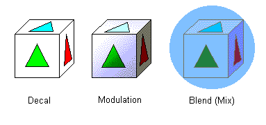

Next, you need to decide how to apply the texture (picture) to the model.
For example, you could choose to simply draw each texel's color information on the model, or you could add special effects to the picture information. The direct drawing method is called the "decal mode" or the "sticker mode." To add lighting and shading effects to the texel colors is called the "modulation mode." And to mix the texel colors with other arbitrary colors is called the "blend mixing mode."
The decurl mode is easy, but it doesn't show the influence of the lighting effects. Therefore, if you use it too many times, you may ruin the stereoscopic effect of your scene.

You can use the following N64 functions to set up the texturing method:
Nintendo® Confidential
Copyright © 1999
Nintendo of America Inc. All Rights Reserved
Nintendo and N64 are registered trademarks of Nintendo
Last Updated March, 1999